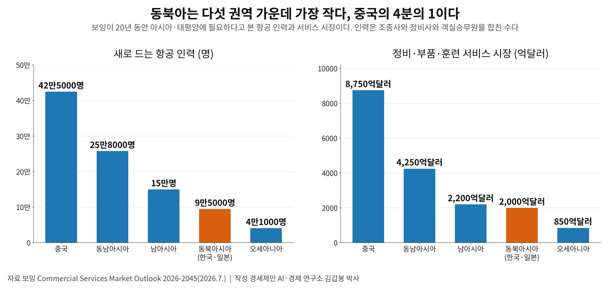
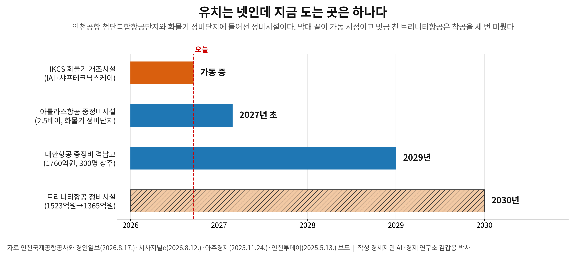

정비사 72만명 시대 오는데, 해외 의존은 56%에서 60%로 갔다
인천 MRO 격납고 유치는 넷, 지금 돌아가는 곳은 개조시설 하나뿐
보잉 20년 항공 인력 수요 동북아 9만5000명, 중국의 4분의 1에 그쳐
에어버스(Airbus)가 9월 15일 서울에서 20년 시장 전망을 냈다. 아시아·태평양에 새 여객기 1만9120대가 필요하다고 봤다. 세계 수요 4만2060대의 45퍼센트다. 기체가 늘면 고칠 일도 따라서 는다. 보잉(Boeing)은 같은 기간 세계에 정비사 72만8000명이 새로 든다고 내다봤다.
1. 제작사 둘이 같은 곳을 가리킨다
에어버스 글로벌 마켓 포캐스트(GMF)는 2026년부터 2045년까지 아태 여객 수송량이 해마다 5.1퍼센트 는다고 봤다. 세계 평균 3.9퍼센트를 웃도는 속도다. 신규 1만9120대 가운데 3분의 1은 낡은 기체를 바꾸는 몫이다. 크기로 나누면 광동체 3420대에 단일통로 1만5700대다.

에어버스는 이 수요를 받치는 기반으로 중산층을 들었다. 2045년까지 아태 중산층 인구가 30억명에 이르고 도시화도 빨라진다고 봤다. 항공 여행이 사회와 경제를 잇는 필수 수단이 된다는 진단이다.
보잉은 두 달 앞서 7월 영국 판보로 에어쇼에서 같은 기간 세계에 4만3625대가 인도된다고 봤다. 에어버스 4만2060대와 차이가 4퍼센트를 넘지 않는다. 국제항공운송협회(IATA)는 더 보수적이다. 3월 제네바에서 낸 2024년부터 2050년까지 전망에 해마다 3.1퍼센트를 잡았다.
세 기관은 속도를 달리 보면서도 어디가 시장을 끄는지는 같이 본다. IATA 전망에서도 아태가 3.8퍼센트로 가장 높고 유럽이 2.5퍼센트로 가장 낮다.
2. 기체가 늘면 정비사가 따라온다
보잉이 내다본 4만3625대는 단일통로 3만3545대에 광동체 7715대, 리저널 1435대, 화물기 930대다. 단일통로가 네 대 가운데 세 대를 넘어 앞으로의 정비 물량 성격을 정한다.

보잉은 기체 전망과 같은 날 서비스 시장 전망도 내놓았다. 정비와 부품과 훈련을 묶어 20년 누적 규모를 4조9000억달러로 잡았다. 새로 드는 항공 인력은 242만5000명이다. 객실승무원 102만3000명과 정비사 72만8000명과 조종사 67만4000명 순이다.
정비사가 조종사보다 5만4000명 많다. 항공기를 띄우는 데 조종석보다 격납고에 사람이 더 든다. 이태석 대한항공 정비사업본부 연구자와 윤문길 한국항공대 경영학과 교수는 2008년 항공진흥에 논문을 실었다. 정비사업이 노동집약적이라 이익을 크게 내기 어렵다고 짚었다. 격납고를 지어도 자격을 갖춘 정비사가 없으면 물량을 받지 못한다.
[도표1] 보잉이 본 아시아·태평양 다섯 권역의 20년 항공 인력 수요와 서비스 시장. 동북아시아는 인력 9만5000명에 시장 2000억달러로 다섯 가운데 가장 작다(보잉 Commercial Services Market Outlook 2026-2045로 작성)
3. 동북아 몫이 가장 작다
보잉은 서비스 시장과 항공 인력 수요를 아태 다섯 권역으로 쪼갰다. 인력은 조종사와 정비사와 객실승무원을 합친 수다. 중국이 42만5000명에 8750억달러로 가장 크고 동남아시아가 25만8000명에 4250억달러로 뒤를 잇는다. 한국이 속한 동북아시아는 9만5000명에 2000억달러로 가장 작다.
중국 시장이 동북아의 네 배를 넘고 동남아도 두 배를 넘는다. 보잉은 신규 인도의 45퍼센트가 북미와 유라시아와 오세아니아와 동북아 같은 성숙시장으로 간다고 봤다. 동북아 몫이 작은 까닭이 여기 있다. 기단이 이미 커서 새로 늘기보다 낡은 기체를 바꾸는 쪽으로 간다.
인천공항이 동북아 안에서만 물량을 다투면 판이 좁다. 권역 밖에서 기체를 끌어와야 규모가 선다. 이태석과 윤문길이 18년 전 논문 결론에 적은 경쟁 상대가 바로 풍부한 노동력과 낮은 임금을 앞세운 중국과 동남아시아 업체였다.
[도표2] 인천공항 정비시설 넷의 가동 시점. 지금 도는 곳은 IKCS 하나이고 트리니티항공은 착공을 세 번 미뤘다(인천국제공항공사와 경인일보·시사저널e·아주경제·인천투데이 보도로 작성)
4. 유치는 넷, 도는 곳은 하나다
인천공항 첨단복합항공단지는 제4활주로 북서측 234만6000제곱미터 규모다. 격납 부지 일곱 곳 가운데 셋에 IKCS와 트리니티항공과 대한항공을 들였다. 화물기 정비단지에는 미국 아틀라스항공이 2.5베이 중정비시설을 따로 짓는다.
지금 돌아가는 곳은 IKCS 하나다. 보잉 777-300ER 여객기를 화물기로 바꾸고 있고 첫 출고가 올해 말 목표다. 대한항공 격납고는 1760억원을 들여 중대형 2대와 소형 1대를 동시에 다루고 300명이 상주할 예정이다. 아틀라스항공은 2027년 초, 대한항공은 2029년, 트리니티항공은 2030년에 문을 연다.
트리니티항공 격납고는 일정이 세 번 밀렸다. 착공이 2026년 3월에서 그해 8월로, 다시 2027년 12월로 갔다. 투자 금액도 1523억원에서 1365억원으로 줄었다. 회사는 안전성과 정비 효율을 우선해 설계를 다시 보고 관계기관과 협의했다고 밝혔다.
5. 56퍼센트가 60퍼센트로 갔다
정비를 마무리하는 도색 시설은 아직 없다. 중정비나 개조로 기체를 뜯고 손보면 다시 칠해야 한다. 국내에서 칠할 수 있는 곳은 경남 김해 대한항공 테크센터 한 곳뿐이다. 인천 도색 수요가 연간 약 35대인데도 1150억원이 드는 격납고에 투자자가 아직 나서지 않았다.
같은 공항의 다른 자리에는 민간을 부르고 있다. 공사는 이달 중 14만제곱미터 비즈니스 항공단지 사업자를 공모한다. 전용기 터미널과 격납고 두 동을 민간이 전액 투자해 짓는 방식이다.
그사이 정비는 계속 밖으로 나갔다. 국토교통부 등 관계부처는 2021년 항공정비산업 경쟁력 강화방안에서 해외 위탁정비율을 56퍼센트로 집계했다.
지난해 국내 정비 시장은 3조9000억원이다. 국내 항공사가 해외에 내는 돈이 해마다 2조4000억원을 넘어 의존도가 60퍼센트대로 올라섰다. 정부가 문제로 꼽은 지 다섯 해 만에 수치가 거꾸로 갔다.
인력을 기르는 일이 없지는 않다. 인천시는 지난해 정석항공과학고와 항공우주산학융합원을 잇는 교육체계를 갖췄다. 영종구는 청년 스무 명을 3주 90시간 실습시켜 지난달 수료시켰다. 실습장은 인천이 아니라 제주항공 김포공항 정비기지였다.
다만 자릿수가 다르다. 보잉이 동북아에 20년 항공 인력 9만5000명을 말한 옆에 스무 명 단위 과정이 놓인다. 격납 부지 일곱 곳을 다 채워도 고칠 사람이 없으면 기체는 오지 않는다.
참고문헌
논문과 연구보고서
이태석·윤문길, 「우리나라 항공기 정비사업 시장분석 및 발전방안」, 『항공진흥』 제48호,
한국항공진흥협회, 2008년 8월, 116-138쪽.
국토교통부 등 관계부처 합동, 「항공정비(MRO)산업 경쟁력 강화방안」,
제43차 비상경제 중앙대책본부회의, 2021년 8월 12일.
공식 발표자료
Airbus, 「아시아·태평양, 향후 20년간 신규 항공기 19,120대 수요」,
Global Market Forecast 2026-2045 보도자료, 2026년 9월 15일.
Boeing, Commercial Market Outlook 2026-2045, 2026년 7월 영국 판보로 에어쇼.
https://boeing.mediaroom.com/2026-07-17-Boeing-Global-Commercial-Fleet-Will-Top-50,000-Airplanes-in-20-Years-as-Passenger-Traffic-Doubles
Boeing, Commercial Services Market Outlook 2026-2045, 2026년 7월.
https://boeing.mediaroom.com/2026-07-17-Boeing-Forecasts-4-9-Trillion-Commercial-Aviation-Support-and-Services-Market-and-Demand-for-more-than-2-4-Million-New-Aviation-Personnel-Over-20-Years
IATA, 「Air Travel Demand Will More Than Double by 2050」, 2026년 3월 17일, 제네바.
https://www.iata.org/en/pressroom/2026-releases/2026-03-17-01/
인천국제공항공사, 「항공MRO단지」 누리집 안내.
https://www.airport.kr/co_ko/783/subview.do
언론 보도
김동호, 「"해외로 새는 2.4兆 잡는다"…인천공항공사 '고부가 MRO' 승부수[현장르포]」,
파이낸셜뉴스, 2026.08.06. https://www.fnnews.com/news/202608060815591443
노경은, 「트리니티항공 격납고 착공 또 연기···기단 확대와 시차 보이는 인프라 구축」,
시사저널e, 2026.08.12. https://www.sisajournal-e.com/news/articleView.html?idxno=423036
김주엽, 「[뉴스분석] 항공 MRO 커지는 인천공항, 과제는?」, 경인일보, 2026.08.17.
https://www.kyeongin.com/article/1769117
김주엽, 「인천공항 첨단복합항공단지 2단계 사업 '잰걸음'」, 경인일보, 2026.04.27.
https://www.kyeongin.com/article/1762599
한지연, 「대한항공, 인천국제공항에 신규 정비격납고...1760억원 투입」, 아주경제, 2025.11.24.
https://www.ajunews.com/view/20251124162642645
이종선, 「미국 아틀라스항공 인천공항 방문 MRO 협력 재확인」, 인천투데이, 2025.05.13.
https://www.incheontoday.com/news/articleView.html?idxno=302202
이병훈, 「인천시, 항공정비(MRO) 통합교육체계 구축」, 국제뉴스, 2025.07.01.
https://www.gukjenews.com/news/articleView.html?idxno=3313040
김선근, 「영종구, 항공정비 MRO 실무교육 20명 전원 수료」, 라이브뉴스, 2026.08.19.
https://www.livesnews.com/news/article.html?no=63448
김상연, 「인천공항공사 비즈니스 항공단지 개발 추진…이달 사업자 공모」, 연합뉴스, 2026.09.02.
https://supple.kr/news/cmtjs568100711l06t1e54bpe